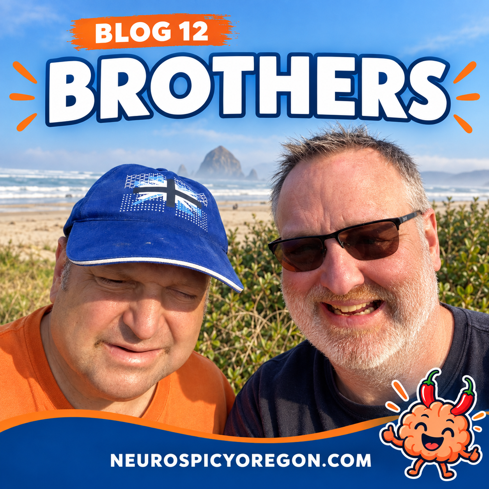

I guess it’s about time we introduced ourselves.
I’m Brian, and this is my brother, Ernie. He is 57, I’m 55, and we’ve been taking care of each other for about 30 years.
Ernie had a rough time growing up. Schools didn’t really know what to do with autistic children back then. He experienced a great deal of bullying and was kicked out of four different grade schools.
Luckily, he eventually found a teacher who was patient and understanding. By middle school and high school, special education programs were becoming better developed, and Ernie went on to complete a modified diploma.
MEET ERNIE
I call my brother the Tank.
Once he sets his mind on something, absolutely nothing—not even a celestial event—is going to stop him.
He also keeps a very rigid schedule. Any deviation can cause both of us untold distress. Over the years, though, we’ve learned what each of us does well and where each of us needs help.
I’m not going to sugarcoat it. We still have good days and bad days. But Ernie is a very special guy who also happens to be my brother.
Where Do You Go For Support?
One thing I’ve noticed over the years is the lack of meaningful support for autistic adults.
I’m happy to see more programs becoming available for autistic children and young people. But those children eventually become adults, and the need for understanding, community, and practical support doesn’t disappear on their eighteenth birthday.
Our dad spent years working with Ernie on communication and everyday skills. Some of the approaches used back then—especially the emphasis on eye contact—might be viewed differently today. Still, I believe that steady attention helped Ernie develop many of the communication skills he now uses.
And Ernie is definitely a social creature.
He loves talking to people, being recognized, and visiting the same places at the same time every day. People can practically set their clocks by Ernie’s schedule.
We grew up in Hillsdale, a neighborhood in Portland, Oregon. Everybody seemed to know Ernie.
It reached the point where I could walk into the bank or a store and nobody would say, “Oh, you’re Brian.”
They would say:
“Oh, you’re Ernie’s brother. He talks about you all the time.”
Apparently, I’m the supporting character in Ernie’s very well-established local franchise.
Our Next Chapter
Ernie is excited to be part of Neuro Spicy Collective as one of its founding members. (He doesn’t know that I put him on the Board of Directors of the upcoming nonprofit company… shhhh.)
When I told him about our dream of moving to the country and starting a farm, he immediately became excited about feeding and caring for the animals.
I have to be careful when I share dreams with him. The minute I mention something, he assumes it will happen tomorrow.
Probably not tomorrow, Ernie.
We definitely have some lofty ideas and goals. Money is one area where Ernie and I see things differently. He sometimes believes it will simply appear whenever something is needed.
The trials and tribulations of federal grants, loans, regulations, and bureaucratic red tape do not interest him nearly as much as the future animals.
Honestly, I can’t blame him. Believe me, I didn’t wanna ever have to know about debt financing, crowdfunding, and the five seas of loan approval. But one thing we do agree is that neither of us like to do the adulting.
I’m happy that he’s excited about starting this new chapter in our lives.
Building a Community
We started Neuro Spicy Collective only a couple of months ago.
Until recently, I had never posted on Instagram. I had other social media accounts, but I barely used them and sometimes forgot they existed. Now I’m hip-deep in media and content creation.
So far, I’ve loved it.
I’ve also been reading posts from other neurodivergent people and organizations. We all have our own stories—our challenges, triumphs, disasters, and occasional epic failures.
I believe we benefit from sharing those stories with one another. That is one of the guiding principles behind Neuro Spicy Collective: fostering a genuine sense of community.
Thanks for listening and getting to know us.
Who knows? Ernie might even write a blog of his own someday.
If he sets his mind to it, I certainly won’t be able to stop him. 🤷♂️
Keep it spicy! 🌶️